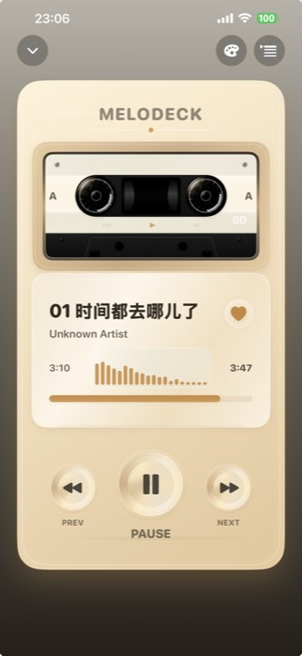
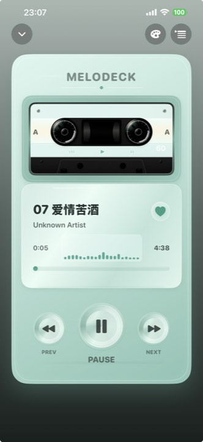
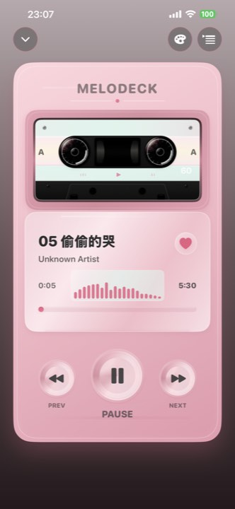

Your sources
Organize local files, system libraries and explicitly selected directories from supported cloud storage providers.
A music library for your own audio
MeloDeck is an independent, privacy-conscious music library and player in active development for iOS and Android. It brings local files and user-owned cloud audio into one carefully designed listening experience.
Pocket Cassette
Three tactile colorways bring a different character to the same focused listening experience.



MeloDeck is designed for music files that users already own or are authorized to access.
Organize local files, system libraries and explicitly selected directories from supported cloud storage providers.
Keep titles, artists, albums and artwork in a non-destructive metadata layer without rewriting the original audio files.
Enjoy tactile, themeable player designs and real-time audio visualization generated from the audio being played.
Responsible by design
MeloDeck does not provide a public music catalogue, redistribute user files, scrape streaming platforms or bypass DRM, subscriptions or provider restrictions.
Cloud access is designed around official APIs or standard protocols, with credentials kept in platform-protected storage and file access limited to directories selected by the user.
Planned metadata enrichment uses identifiers, duration and acoustic fingerprints where permitted. Raw audio is not uploaded for metadata matching.